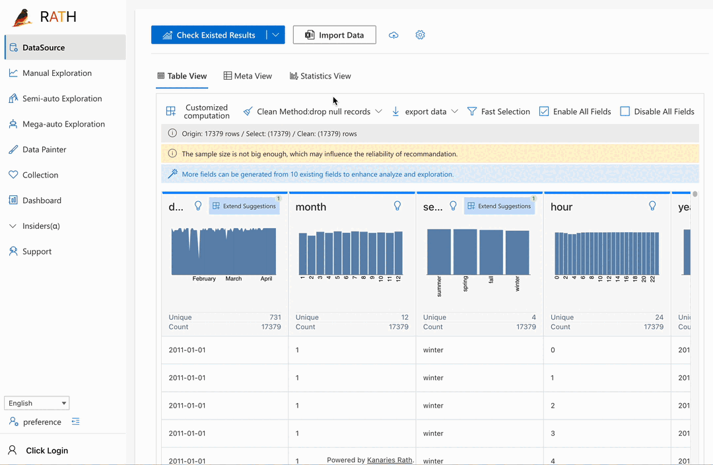
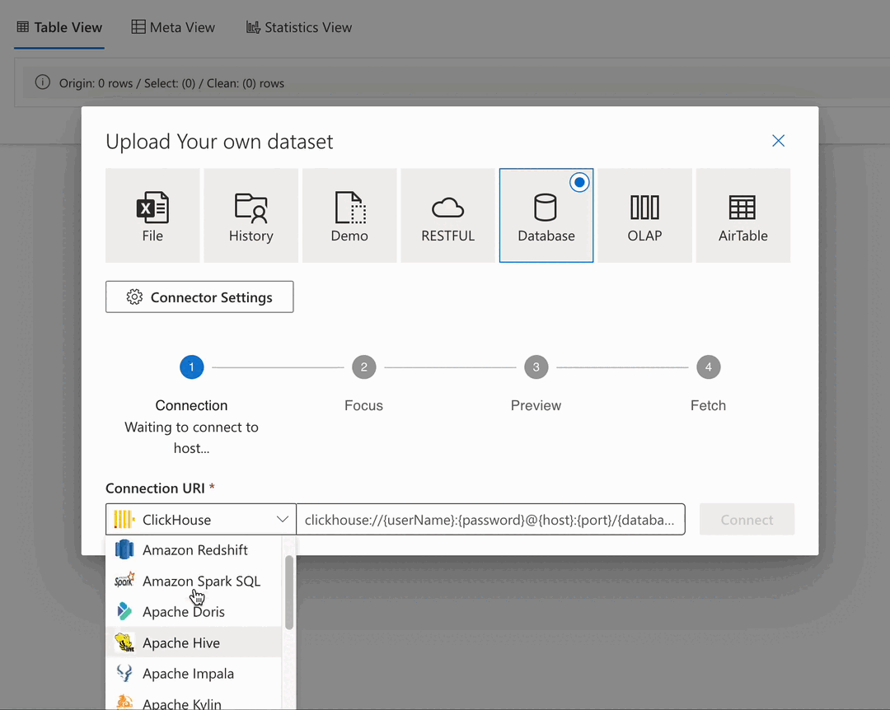
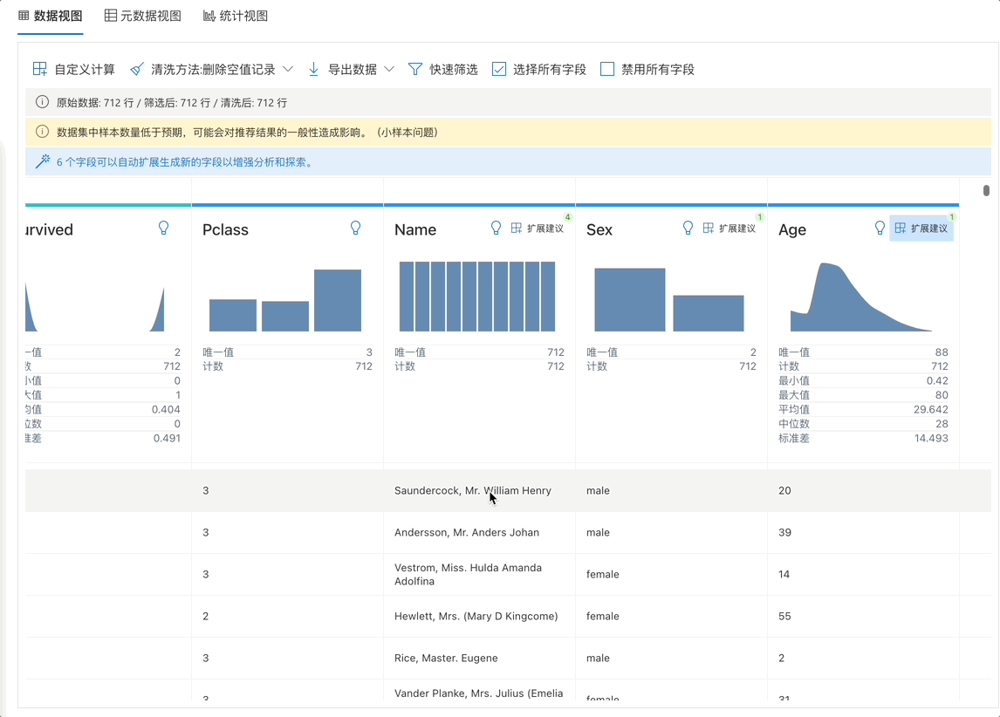
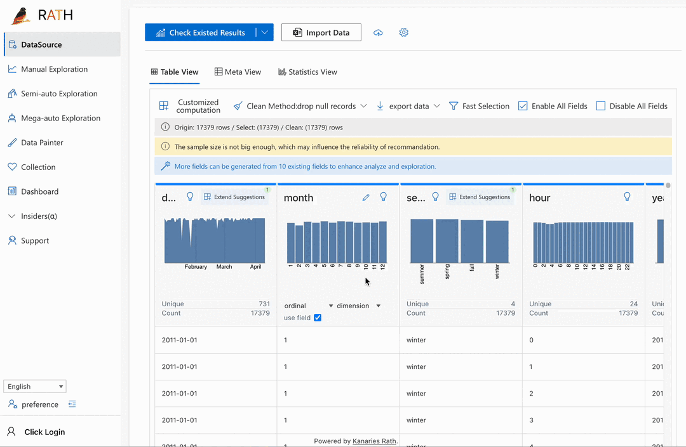
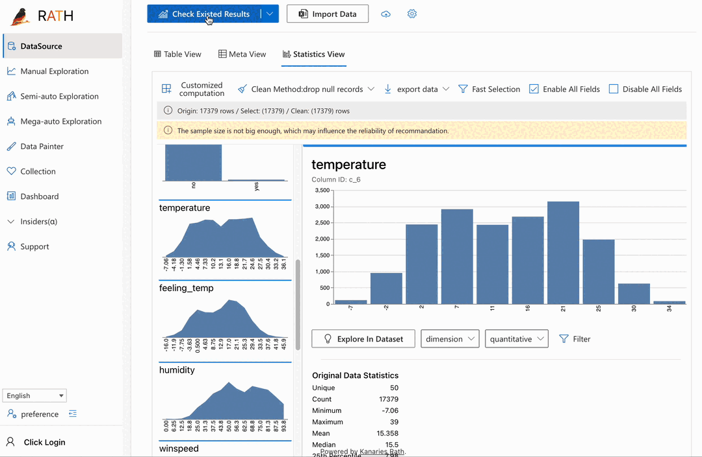
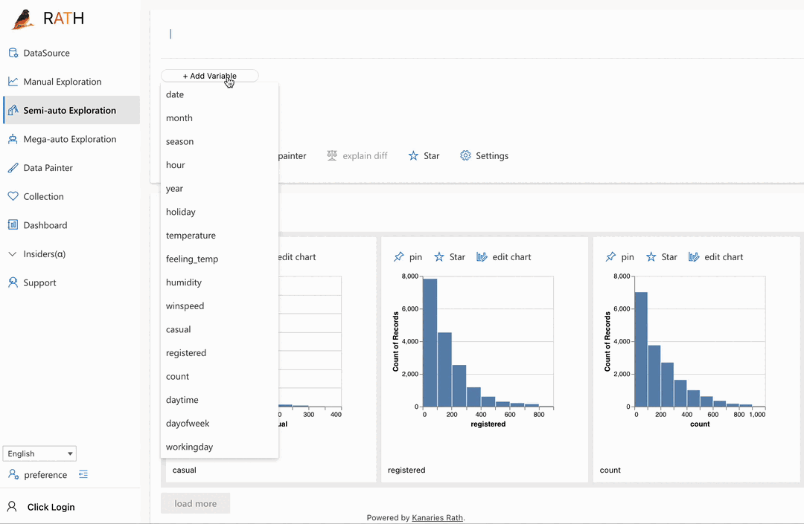
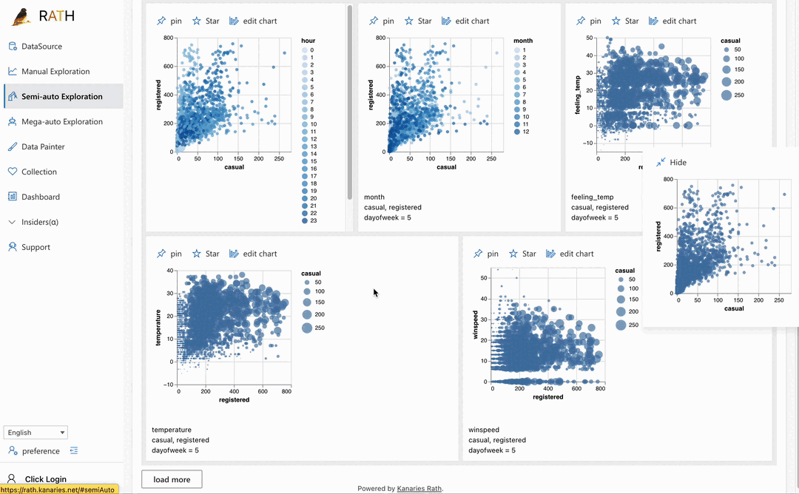
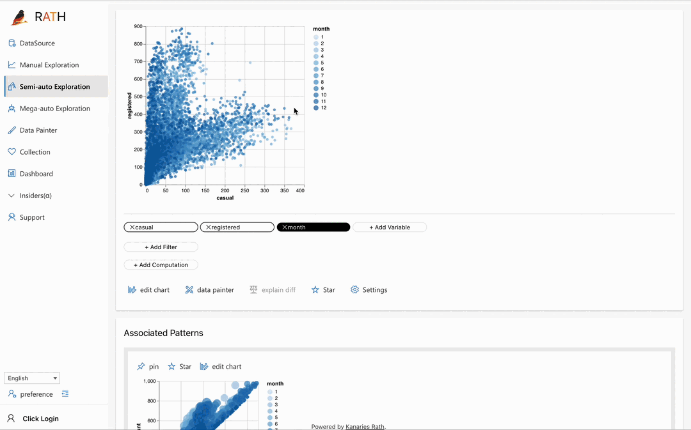
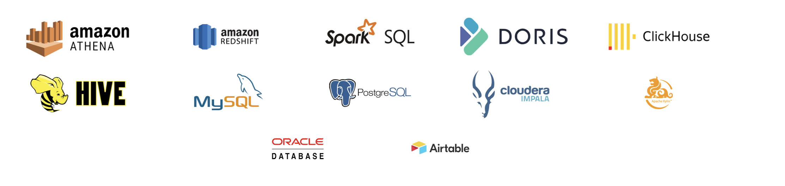

RATH
次世代开源智能数据分析与可视化应用未来的数据分析场景会是怎样的？RATH借助自动化的数据分析、智能可视化叙事、因果发现与文本挖掘帮助你以前所未有的方式挖掘数据中的价值。


欢迎
欢迎使用RATH!
RATH 不仅仅是数据分析和可视化工具（如 Tableau）的开源替代品，还是次世代的数据分析应用的雏形。主要功能包括：
- 支持主流数据库导入
- 自动生成多维数据并可视化
- 自动发现数据规律，揭示数据的内在联系和因果关系
- 因果发现与推断，帮你挖掘更深层次的变量关系。
- 根据你关心的文本片段，自动理解你想要进行的数据转化操作，并帮你生成转化选项。
- 使用增强分析引擎自动化你的探索性数据分析（EDA）流程
- 数据绘板，使用绘画的方式玩数据分析。

快速上手RATH
联系我们
RATH是开源项目，离不开开源贡献者和关注者的支持。当你遇到问题，bug，疑惑，甚至有有趣的想法或建议，都可以联系我们：
- 邮件: support@kanaries.org
- QQ群: 129132269
- 公众号: kanaries
💪加入我们的社区，成为 RATH 大家庭的一部分！💪
目录
| Why use RATH? | Try RATH | Feature highlights | Walkthroughs | Developer Documentation | Project Status | Community | Contributions | License (AGPL) |
启动RATH
你可以：
- 无需代码知识，在浏览器中直接使用 RATH Cloud
- 下载 桌面版RATH
- 或者在本地部署RATH：
git clone https://github.com/Kanaries/Rath.git && cd Rath
yarn install
yarn workspace rath-client start
功能特点
-
自动化的探索分析 🚀 数据分析领域的Copilot
面对复杂多变的数据无从下手？发现数据问题，难以快速定位原因。RATH 提供全/半自动的探索分析能力，让机器替你在复杂多变的数据中完成挖掘探索工作。甚至只需一键即可生成动态数据报表。
-
多维可视化探索 🔭 RATH 可以自动化的识别一些数据中的高维复杂规律，并以多维可视化的形式呈现。
数据探索分析时，多维可视化分析往往能够揭示数据中的深层规律，带给分析人员更多的洞见。过去，需要分析人员具备一定的可视分析的专业知识，才能有效的运用高维可视化发现规律。RATH 则会帮你自动化完成这一工作，让你专注在业务问题本身。
-
基于图形语法的分析模块 👾 RATH 内置了基于图形语法的内置自助分析模块。
除了全自动化的分析体验，分析师有时会有着明确的分析目的，此时 RATH 会提供一个基于图形语法的自助分析模块，帮助分析师使用传统的分析方式完成自定义的分析。
-
无需担心冷启动问题 🤝 RATH 并不依赖于一些先验知识或是领域经验的输入
与一些其他的自动化技术不同，RATH 不依赖一些预定义的领域经验、人为标注。只需要最纯粹的数据源本身即可，RATH 会自己理解数据本身，这使得即使你给到RATH的是混淆加密的数据，RATH 仍然可以给到有效的分析结果。当然，如果你能告诉 RATH 更多的信息，RATH 会表现的更好，但通常情况下，RATH 无需这些信息便能给出洞察。
功能截图
导入数据源

数据转化与清洗
导入数据后，你可以在RATH中快速了解数据的大致分布情况，RATH也会提供一些自动化清洗和转化的方法。
另外，RATH还内置了文本模式识别提取功能，对于一些文本字段，你可以在文本中选择你关心的部分，RATH会自动归纳文本特征，并为你匹配类似的特征，并提取生成新字段。 

一键全自动分析，并生成可视化视图
在完全没有头绪时，点击自动分析，RATH就可以帮你完成对数据集的探索与挖掘，帮你发现数据中的规律，问题，并自动生成可视化。

半自动探索
结合了全自动和半自动的优点，每次都根据你当前关心的点，推荐下一步的分析建议，而不再是做全局的自动化。

自助分析 （类Tableau）
一个传统的类tableau的拖拉拽分析的模块，适合有明确的分析目的和问题。

自助分析同时也是一个独立的模块。你可以把它嵌入到你自己的APP内。更多参考位于
packages/graphic-walker/README.md的README文档安装方法：
yarn add @kanaries/graphic-walker # or npm i --save @kanaries/graphic-walker
数据绘板，以绘画的方式完成数据分析工作流

支持数据库
